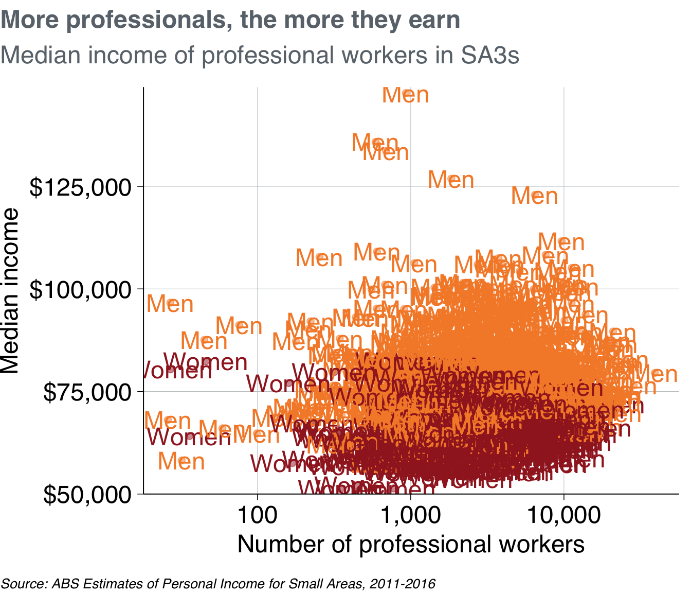
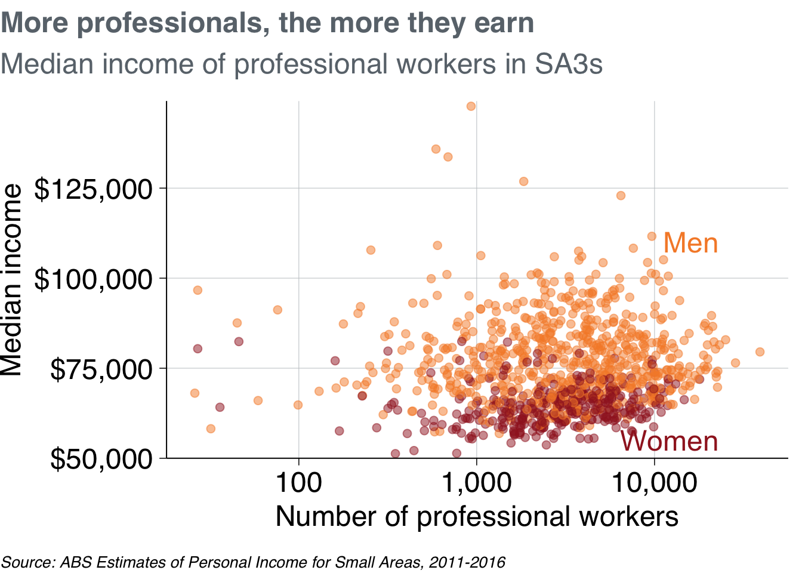

8 Data Visualisation
This chapter explores data visualisation broadly, and how to ‘do’ data visualisation in R specifically.
The next chapter – the Visualisation Cookbook – gives more practical advice for the charts you might want to create.
8.1 Introduction to data visualisation
You can use data visualisation to examine and explore your data, and to present a finding to your audience. Both of these elements are important.
When you start using a dataset, you should look at it.6 Plot histograms of variables-of-interest to spot outliers. Explore correlations between variables with scatter plots and lines-of-best-fit. Check how many observations are in particular groups with bar charts. Identify variables that have missing or coded-missing values. Use faceting to explore differences in the above between groups, and do it interactively with non-static plots.
These exploratory plots are just for you and your team. They don’t need to be perfectly labelled, the right size, in the Grattan palette, or be particularly interesting. They’re built and used only to help you and your team explore the data. Through this process, you can become confident your data is what you think it is.
When you choose to present a visualisation to a reader, you have to make decisions about what they can and cannot see. You need to highlight or omit particular things to help them better understand the message you are presenting.
This requires important technical decisions: what data to use, what ‘stat’ to present it with — show every data point, show a distribution function, show the average or the median? — and on what scale — raw numbers, on a log scale, as a proportion of a total?.
It also requires aesthetic decisions. What colours in the Grattan palette would work best? Where should the labels be placed and how could they be phrased to succinctly convey meaning? Should data points be represented by lines, or bars, or dots, or balloons, or shades of colour?
All of these decisions need to made with two things in mind:
- Rigour, accuracy, legitimacy: the chart needs to be honest.
- The reader: the chart needs to help the reader understand something, and it must convince them to pay attention.
At the margins, sometimes these two ideas can be in conflict. Maybe a 70-word definition in the middle of your chart would improve its technical accuracy, but it could confuse the average reader and reduce the chart’s impact.
Similarly, a bar chart is often the safest way to display data. Like our prose, our charts need to be designed for an interested teenager. But we need to earn their interest. If your reader has seen four similar bar charts in a row and has stopped paying attention by the fifth, your point loses its punch.7
The way we design charts – much like our writing – should always be honest, clear and engaging to the reader.
This chapter shows how you can do this with R. It starts with the ‘grammar of graphics’ concepts of a package called ggplot, and explains how to make those charts ‘Grattan-y’. The next chapter gives you the when-to-use and how-to-make particular charts.
8.2 Set-up and packages
This section uses the package ggplot2 to visualise data, and dplyr functions to manipulate data. Both of these packages are loaded with tidyverse. The scales package helps with labelling your axes.
The grattantheme package is used to make charts look Grattan-y. The absmapsdata package is used to help make maps.
# note: to be added to grattantheme; remove this when done
grattan_label <- function(..., size = 18) {
.size = size / ggplot2::.pt
geom_label(...,
fill = "white",
label.padding = unit(0.01, "lines"),
label.size = 0,
size = .size)
}For most charts in this chapter, we’ll use the sa3_income data summarised below.8 It is a long dataset containing the median income and number of workers by SA3, occupation and gender between 2010 and 2015. We will also create a professionals subset that only includes people in professional occupations in 2015:
sa3_income <- read_csv("data/sa3_income.csv")
professionals <- sa3_income %>%
select(-sa4_name, -gcc_name) %>%
filter(year == 2015,
occupation == "Professionals",
!is.na(median_income),
!gender == "Persons")
# Show the first six rows of the new dataset
head(professionals)## # A tibble: 6 x 14
## sa3 sa3_name sa3_sqkm sa3_income_perc… state occupation occ_short prof
## <dbl> <chr> <dbl> <dbl> <chr> <chr> <chr> <chr>
## 1 10102 Queanbe… 6511. 74 NSW Professio… Professi… Prof…
## 2 10102 Queanbe… 6511. 74 NSW Professio… Professi… Prof…
## 3 10102 Queanbe… 6511. 74 NSW Professio… Professi… Prof…
## 4 10103 Snowy M… 14283. 7 NSW Professio… Professi… Prof…
## 5 10103 Snowy M… 14283. 7 NSW Professio… Professi… Prof…
## 6 10103 Snowy M… 14283. 7 NSW Professio… Professi… Prof…
## # … with 6 more variables: gender <chr>, year <dbl>, median_income <dbl>,
## # average_income <dbl>, total_income <dbl>, workers <dbl>8.3 Concepts
The ggplot2 package is based on the grammar of graphics. …
The main ingredients to a ggplot chart are:
- Data: what data should be plotted.
- e.g.
data
- e.g.
- Aesthetics: what variables should be linked to what chart elements.
- e.g.
aes(x = population, y = age)to connect thepopulationvariable to thexaxis, and theagevariable to theyaxis.
- e.g.
- Geoms: how the data should be plotted.
- e.g.
geom_point()will produce a scatter plot,geom_colwill produce a column chart,geom_line()will produce a line chart.
- e.g.
Each plot you make will be made up of these three elements. The full list of standard geoms is listed in the tidyverse documentation.
ggplot also has a ‘cheat sheet’ that contains many of the often-used elements of a plot, which you can download here.

For example, you can plot a column chart by passing the sa3_income dataset into ggplot() (“make a chart with this data”). This completes the first step – data – and produces an empty plot:

Next, set the aes (aesthetics) to x = state (“make the x-axis represent state”), y = pop (“the y-axis should represent population”), and fill = year (“the fill colour represents year”). Now ggplot knows where things should go.
If we just plot that, you’ll see that ggplot knows a little bit more about what we’re trying to do. It has the states on the x-axis and range of populations on the y-axis:

Now that ggplot knows where things should go, it needs to how to plot them on the chart. For this we use geoms. Tell ggplot to take the things it knows and plot them as a column chart by using geom_col:

Great! There are a couple of quick things we can do to make the chart a bit clearer. There are points for each group in each year, which we probably don’t need. So filter the data before you pass it to ggplot to just include 2015: filter(year == 2015). There will still be lots of overlapping points, so set the opacity to below one with alpha = 0.5. The workers x-axis can be changed to a log scale with scale_x_log10.
professionals %>%
ggplot(aes(x = workers,
y = median_income,
colour = gender)) +
geom_point(alpha = .5) +
scale_x_log10()
That looks a bit better. The following sections in this chapter will cover a broad range of charts and designs, but they will all use the same building-blocks of data, aes, and geom.
The rest of the chapter will explore:
- Exploratory data visualisation
- Grattanising your charts and choosing colours
- Saving charts according to Grattan templates
- Making bar, line, scatter and distribution plots
- Making maps and interactive charts
- Adding chart labels
8.4 Exploratory data visualisation
Plotting your data early in the analysis stage can help you quickly identify outliers, oddities, things that don’t look quite right.
8.5 Making Grattan-y charts
The grattantheme package contains functions that help Grattanise your charts. It is hosted here: https://github.com/mattcowgill/grattantheme
You can install it with remotes::install_github from the package:
The key functions of grattantheme are:
theme_grattan: set size, font and colour defaults that adhere to the Grattan style guide.grattan_y_continuous: sets the right defaults for a continuous y-axis.grattan_colour_continuous: pulls colours from the Grattan colour palette forcolouraesthetics.grattan_fill_continuous: pulls colours from the Grattan colour palette forfillaesthetics.grattan_save: a save function that exports charts in correct report or presentation dimensions.
This section will run through some examples of Grattanising charts. The ggplot functions are explored in more detail in the next section.
8.5.1 Making Grattan charts
Start with a scatterplot, similar to the one made above:
base_chart <- professionals %>%
ggplot(aes(x = workers,
y = median_income,
colour = gender)) +
geom_point(alpha = .5) +
labs(title = "More professionals, the more they earn",
subtitle = "Median income of professional workers in SA3s",
x = "Number of professional workers",
y = "Median income",
caption = "Source: ABS Estimates of Personal Income for Small Areas, 2011-2016")
base_chart
Let’s make it Grattany. First, add theme_grattan to your plot:

Then use grattan_y_continuous to adjust the y-axis. This takes the same arguments as the standard scale_y_continuous function, but has Grattan defaults built in. Use it to set the labels as dollars (with scales::dollar()) and to give the y-axis some breathing room (starting at $50,000 rather than the minimum point).
Also add scale_x_log10 to make the x-axis a log10 scale, telling it to format the labels as numbers with commas (using scales::comma()).9
base_chart +
theme_grattan(chart_type = "scatter") +
grattan_y_continuous(labels = dollar, limits = c(50e3, NA)) +
scale_x_log10(labels = comma) 
To define colour colours, use grattan_colour_manual with the number of colours you need (two, in this case):
prof_chart <- base_chart +
theme_grattan(chart_type = "scatter") +
grattan_y_continuous(labels = dollar, limits = c(50e3, NA)) +
scale_x_log10(labels = comma) +
grattan_colour_manual(2)
prof_chart
Nice chart! Now you can save it and share it with the world.
8.5.2 Saving Grattan charts
The grattan_save function saves your charts according to Grattan templates. It takes these arguments:
filename: the path, name and file-type of your saved chart. eg:"atlas/professionals_chart.pdf".object: the R object that you want to save. eg:prof_chart. If left blank, it grabs the last chart that was displayed.type: the Grattan template to be used. This is one of:"normal"The default. Use for normal Grattan report charts, or to paste into a 4:3 PowerPoint slide. Width: 22.2cm, height: 14.5cm."normal_169"Only useful for pasting into a 16:9 format Grattan PowerPoint slide. Width: 30cm, height: 14.5cm."tiny"Fills the width of a column in a Grattan report, but is shorter than usual. Width: 22.2cm, height: 11.1cm."wholecolumn"Takes up a whole column in a Grattan report. Width: 22.2cm, height: 22.2cm."fullpage"Fills a whole page of a Grattan report. Width: 44.3cm, height: 22.2cm."fullslide"Creates an image that looks like a 4:3 Grattan PowerPoint slide, complete with logo. Width: 25.4cm, height: 19.0cm."fullslide_169"Creates` an image that looks like a 16:9 Grattan PowerPoint slide, complete with logo. Use this to drop into standard presentations. Width: 33.9cm, height: 19.0cm"blog"Creates a 4:3 image that looks like a Grattan PowerPoint slide, but with less border whitespace than ‘fullslide’.""fullslide_44" Createsan image that looks like a 4:4 Grattan PowerPoint slide. This may be useful for taller charts for the Grattan blog; not useful for any other purpose. Width: 25.4cm, height: 25.4cm.- Set
type = "all"to save your chart in all available sizes.
height: override the height set bytype. This can be useful for really long charts in blogposts.save_data: exports acsvfile containing the data used in the chart.force_labs: override the removal of labels for a particulartype. egforce_labs = TRUEwill keep the y-axis label.
To save the prof_chart plot created above as a whole-column chart for a report:

To save it as a presentation slide instead, use type = "fullslide":

Or, if you want to emphasise the point in a really tall chart for a blogpost, you can use type = "blog" and adjust the height to be 50cm. Also note that because this is for the blog, you should save it as a png file:

And that’s it! The following sections will go into more detail about different chart types in R, but you’ll mostly use the same basic grattantheme formatting you’ve used here.
8.6 Adding labels
Labels can be a bit finicky – especially compared to labelling charts visually in PowerPoint. …
Labels can be done in two broad ways:
- Labelling every single data point on your chart. Grattan charts rarely do this.
- Labelling some of the data points on your chart. This is how you label Grattan charts: label on item in a group and let the reader join the dots.
We’ll look at the first approach so you can get a feel for how the labelling geoms – geom_label and geom_text (and some useful extensions) – work. It won’t be pretty.

Great! That looks terrible. geom_text is labelling each individual point because it has been told to do so. Just like geom_point, it takes the x and y aesthetics of each observation, then plots the label at that location. But we just want to label one of the points for female and one for male.
To do this, we can create a new dataset that just contains one observation each. Here, you’re filtering the dataset to include only the female/male observations that have the most people:
label_data <- professionals %>%
group_by(gender) %>%
filter(workers == max(workers)) %>%
ungroup()
label_data## # A tibble: 2 x 14
## sa3 sa3_name sa3_sqkm sa3_income_perc… state occupation occ_short prof
## <dbl> <chr> <dbl> <dbl> <chr> <chr> <chr> <chr>
## 1 11703 Sydney … 25.1 84 NSW Professio… Professi… Prof…
## 2 11703 Sydney … 25.1 84 NSW Professio… Professi… Prof…
## # … with 6 more variables: gender <chr>, year <dbl>, median_income <dbl>,
## # average_income <dbl>, total_income <dbl>, workers <dbl>And then tell geom_text to look at that dataset:

Okay, not bad. The labels go off the chart. You could fix this by shortening the labels either inside the label_data:
label_data_short <- label_data %>%
mutate(gender_label = if_else(gender == "Females",
"Women",
"Men"))
prof_chart +
geom_text(data = label_data_short,
aes(label = gender_label))
Or you could adjust the label values directly inside the aesthetics call. Note that this means you have to provide a vector that is the same length as the number of observations in the data (a length of two, in this case).
To have more freedom over where your labels are placed, you can create a dataset yourself. Add the x and y values for your labels, and the label names.10
self_label <- tribble(
~gender, ~workers, ~median_income,
"Women", 23000, 55000,
"Men", 23000, 110000)
self_label## # A tibble: 2 x 3
## gender workers median_income
## <chr> <dbl> <dbl>
## 1 Women 23000 55000
## 2 Men 23000 110000
[cover annotate]
From Kieran Healy’s Data Vizualization: A Practical Introduction: ‘You should look at your data. Graphs and charts let you explore and learn about the structure of the information you collect. Good data visualizations also make it easier to communicate your ideas and findings to other people.’↩
‘Bar charts are evidence that you are dead inside’ – Amanda Cox, data editor for the New York Times.↩
From ABS Employee income by occupation and gender, 2010-11 to 2015-16↩
The
dollarandcommacommands are functions, but can be used without(). Usingdollar()orcomma()works too, and you can provide arguments that adjust their output: egdollar(suffix = "million")↩We are using the
tribblefunction here to make it a little bit clearer what values apply to which gender. The ‘normal’ way to create a tibble is with thetibblefunction:
tibble(x = c(10, 100), y = c(100, 10)), etc.↩